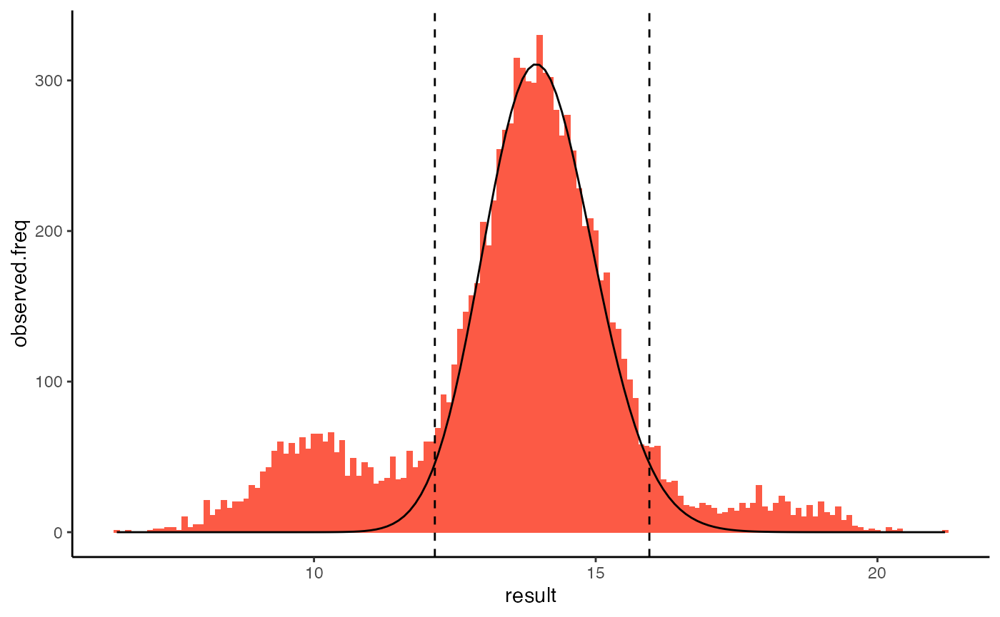
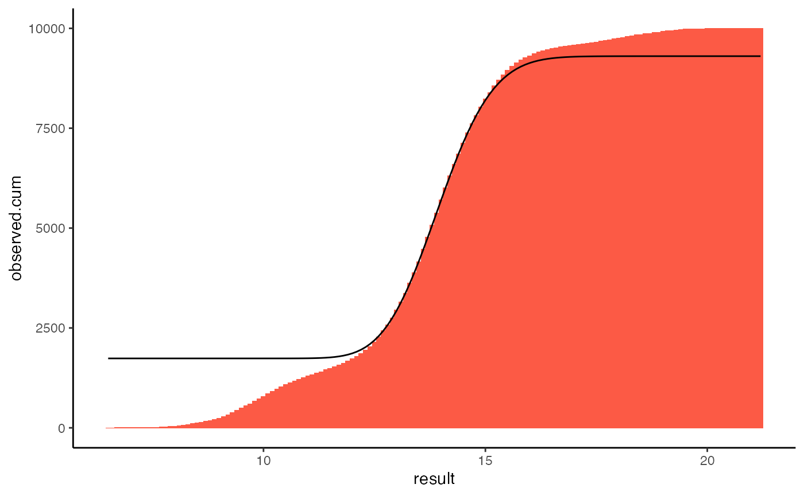

Most medical laboratory results are interpreted by comparing them to a reference interval, which describe the results you would expect in a healthy population. Reference intervals are established by first identifying reference individuals who meet pre-specified criteria for being “healthy”, then performing the laboratory investigation of interest on them. The results from these individuals are called reference values. The reference values are summarised using reference limits, and the interval between two reference limits is the reference interval. Reference intervals are usually calculated so that they include the central 95% of reference values.
The above method of establishing reference intervals is the “direct” method. It is the gold-standard method recommended by the IFCC and CLSI, but it has two main limitation. A lot of resources are needed to recruit the healthy participants perform the investigations, and because of this most direct reference interval studies use a small sample size, which leads to wide confidence intervals around the reference limits.
The limitation of direct methods of establishing reference intervals mean that “indirect” methods that mine routine laboratory data can be preferable. These methods require fewer resources because the data needed for them is readily available, and they can make use of large amounts of data, leading to narrow confidence intervals around the reference limits. The main limitation of indirect methods is that routine laboratory data will be contaminated with pathological results, which will affect the reference intervals calculated. tidykosmic is a tool that reduce the effect of this contamination, which was originally created by Zierk et al. (2020).
Kosmic estimates the distribution of physiological results (reference values) from routine laboratory data that is contaminated with pathological results. It relies on the observation that the pathological results usually fall on the edge of the distribution of physiological result, so there is a section in the middle that contains very few pathological results. Kosmic follows the following steps:
Because the distribution of most laboratory results are skewed, a Box-Cox tranform is used on the data to reduce it. The parameter lambda is chosen to do this.
Kosmic chooses a section in the middle of the data between two truncation limits, t1 and t2.
It then finds the normal distribution that fits the results results in this section the closes. The normal distribution is described by a mean and sd.
Steps 2 and 3 and repeated using many values of t1 and t2 to find the widest possible section that still fits a normal distribution well.
The reference intervals is calculated using the best distribution.
The haemoglobin dataset will be used to demonstrate Kosmic. It is also available using the American English spelling, hemoglobin. It is a simulated dataset containing random physiological test results which were chosen to have a true reference interval of 12.0–16.0 g/dL. These results have been contaminated with pathological results at the lower and upper end of the distribution. It is documented in ?haemoglobin.
haemoglobin
#> result age sex
#> 1 13.4 13.8 m
#> 2 14.2 8.0 w
#> 3 13.1 0.4 m
#> 4 15.6 7.0 m
#> 5 14.3 17.6 w
#> [ reached 'max' / getOption("max.print") -- omitted 9995 rows ]Use kosmic() to estimate the distribution of physiological results. It takes as arguments a numeric vector of investigation results and the number of decimal places to use. Use the same number of decimal places as are use when reporting results, for example, haemoglobin in usually reported to 1 decimal place when quantitated as g/dL. Kosmic takes longer when it has to calculate to more decimal places.
k <- kosmic(haemoglobin$result, decimals = 1)
print(k)
#> Distribution of physiological results estimated using kosmic
#>
#> Number of data points: 10000
#>
#> Distribution estimates:
#> estimate
#> lambda 0.2000000
#> mean 3.4693861
#> sd 0.1178128
#> t1 12.8000000
#> t2 14.9000000
#>
#> Settings:
#> setting
#> decimals 1.0e+00
#> t1min 5.0e-02
#> t1max 3.0e-01
#> t2min 7.0e-01
#> t2max 9.5e-01
#> sd_guess 8.0e-01
#> abstol 1.0e-07tidykosmic’s results can be plotted using plot(). By default this displays a histogram of the original results, the estimated distribution of physiological results, and the reference interval. This graph of frequency can also be specified explicitly using the argument type = "frequency".
plot(k)
The same information can be shown using a cumulative histogram.
plot(k, type="cumulative")
The 2.5th, 50th and 97.5th percentiles can be calculated from the estimated distribution using summary(), which will print them, or quantile(), which will return the reference interval as a vector.
Zierk, Jakob, Farhad Arzideh, Lorenz A. Kapsner, Hans-Ulrich Prokosch, Markus Metzler, and Manfred Rauh. 2020. “Reference Interval Estimation from Mixed Distributions Using Truncation Points and the Kolmogorov-Smirnov Distance (Kosmic).” Scientific Reports 10 (1): 1704. https://doi.org/10.1038/s41598-020-58749-2.